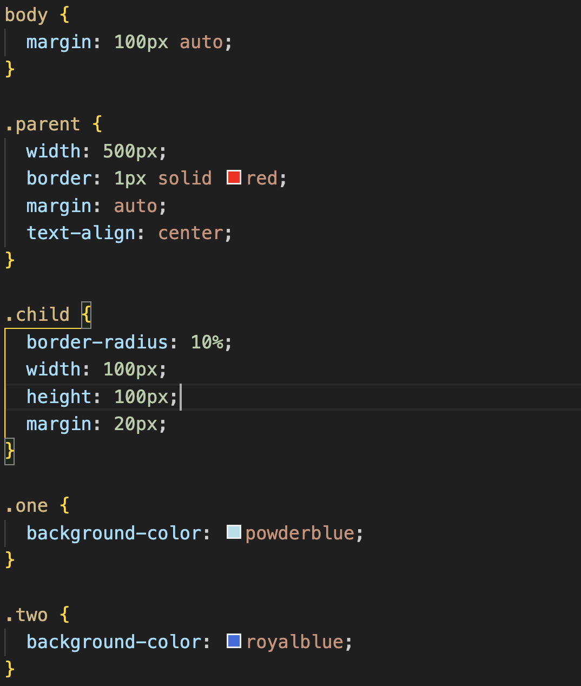
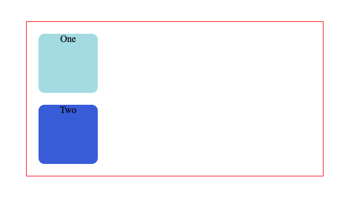
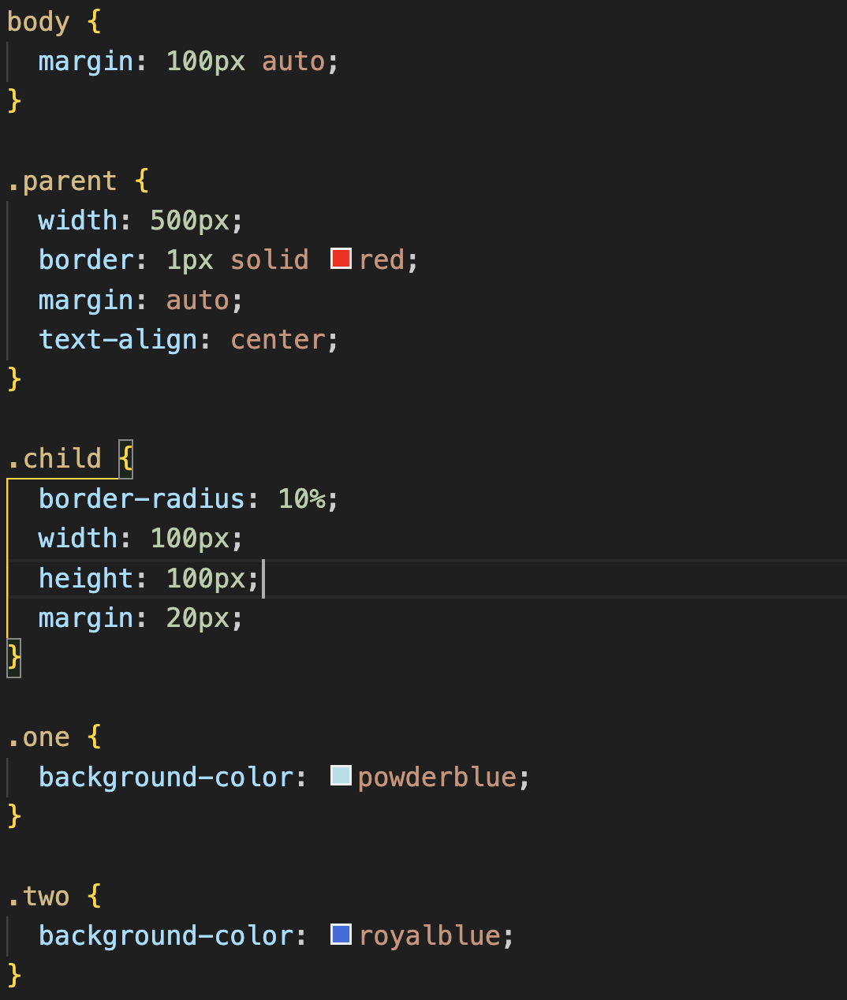
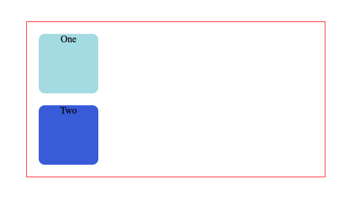
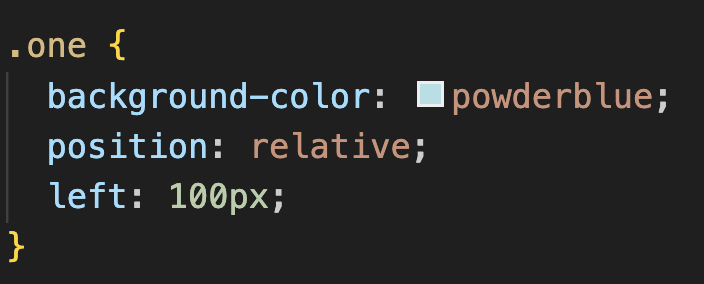
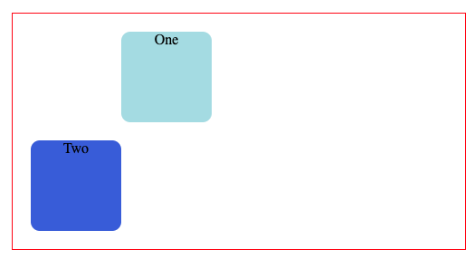
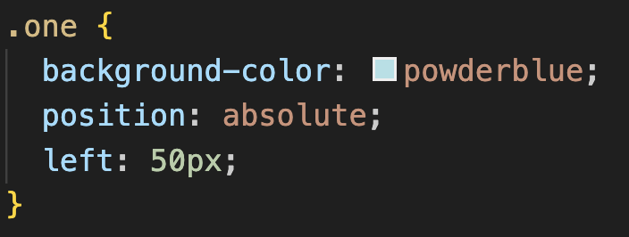
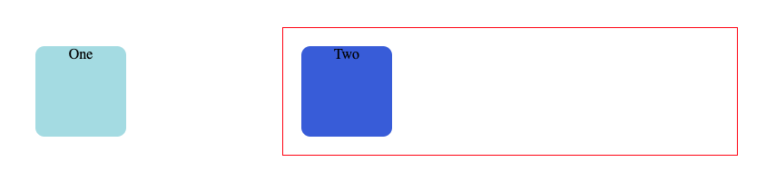
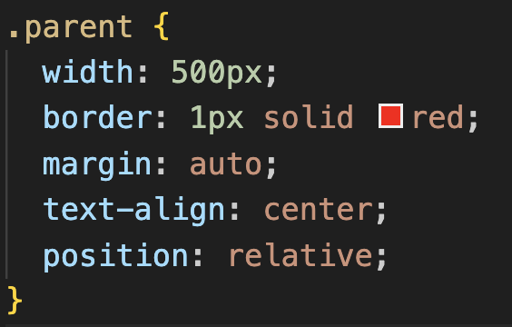
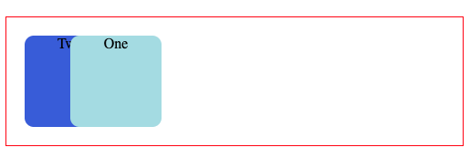

What are the differences between relative, absolute, and fixed positioning?
In this post I'll attempt to breakdown and explain what these ways of positioning are, and the basics of using them
17 January 2024
Quick overview
So what are these things? simply put they are different techniques to move stuff around a web page and have it stay where you want. Although there isnt a definitive "best" one to use, it often depends on the desired layout of the website.
Relative positioning
Relative positioning works by moving an element based on where it gets placed by default. This sounds very confusing but when you see it in action it makes a lot more sense.
 



Let's say you'd like to move the square "one" to the right using relative positioning. When you add "position:relative" in your css to your element, nothing will happen, as it needs instructions on where to move to. You can then declare either "top,right,bottom,left" followed by a value and the image will move based on where it USED to be.
 Ta-da! by simply adding the position:relative and left:100px declarations, the square has moved 100px from the left of where it was supposed to be by default.
Absolute positioning
Absolute positioning works similiarly to relative in that you declare "position:absolute" in your css to what you which to move, and then use "top,right,bottom,left" to instruct where to move it.
The big difference is that absolute positioning basis its movement on a parent element that also has relative or absolute positioning, and if there isnt one it will base its movement on the html tag (the entire document)
 As we can see in the above example, the element has been taken out of its parent main-container. this is because applying absolute positioning only to the item you wish to move makes it base its movement on the entire HTML document. So instead of moving 50px left of its parent container, its moving 50px left of the entire page. To move it as we intend we need to give it a connection to another element to base its movement on, which we do by simply adding "position:relative" to a parent element.
 Yay! it moved as we intended, but why is it overlapping with other elements? well thats the great danger of using absolute positioning- it takes elements out of the flow of the document, while also affecting the layout of any other elements on your web page!
Fixed positioning
Fixed positioning is the most simple to explain; the name says it all! It makes an element FIXED to a certain place on the web page, even if the user scrolls. The most common place I see this is in navbars. Very often a navbar will stay fixed to the left or top of a website, and when the user scrolls all the other content seems to pass under the fixed navbar.
The way to give an element fixed positioning is the same as the previous ways, simply add position:fixed to an element in your CSS, and then you use properties "top,right,bottom,left" to placed the element where you want it to stay.
Conclusion
There are still lots more details about positioning I havnt got into (and still dont understand) but i hope this has at least given you a rough idea or starting point of what these positioning styles are :)